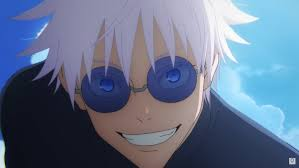
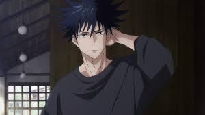
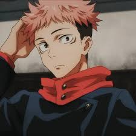

Sukuna est un combattant au corps à corps extrêmement habile et puissant. Il est montré écrasant Megumi avec de simples puissants coups physiques. Sukuna peut combiner son sort à ses prouesses au corps à corps, faisant de lui un adversaire extrêmement difficile à vaincre au combat.
Gojo:

Satoru Gojo est un homme très grand et bien bâti qui est considéré par beaucoup comme étant plutôt beau. Il a les cheveux blancs et possède le Sixième Œil, qui rend ses yeux d'un bleu ciel brillant. Satoru dissimule le plus souvent ses yeux avec un bandeau noir qui coiffe ses cheveux vers l'arrière.
Megumi:

Megumi est généralement un jeune homme plutôt calme, sérieux et réservé, comme le remarquent Nobara et Yuji lorsque ces derniers se plaignent que Megumi ne leur dit presque rien sur lui.
yuji:

Yuji Itadori est le principal protagoniste de Jujutsu Kaisen. Il était initialement un élève de seconde du lycée Sugisawa 3. Toutefois, après avoir ingurgité l'un des Doigts de Ryomen Sukuna alors qu'il était aux portes de la mort, Yuji est devenu le réceptacle du Roi des Fléaux.